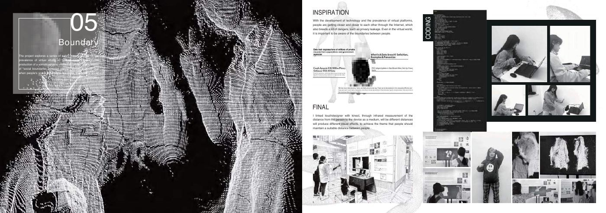
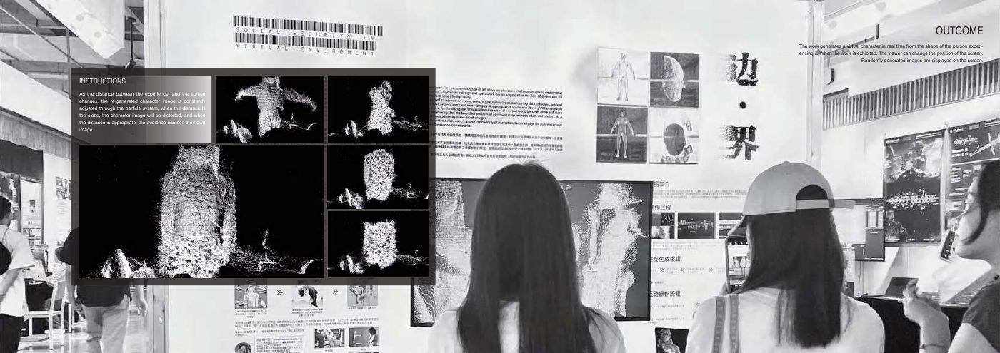

Boundary
An installation that turns physical distance into visible feedback.
View the installation documentation ↓
A boundary you can see
Kinect and TouchDesigner translate changes in proximity into a particle portrait. The portrait distorts as the visitor moves closer.
Discover the rule through movement
At a comfortable distance the visitor can recognize their silhouette. Moving closer distorts the portrait, giving them immediate feedback as they explore their personal space.
Installation documentation

